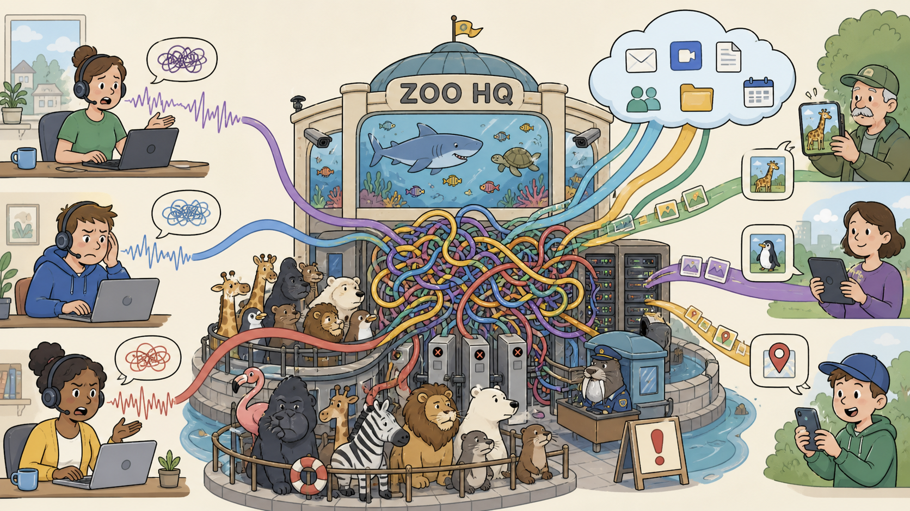

SASE-S1E01
The Perimeter Left the Aquarium

Illustration not yet generated
images/sase-s1e01-the-perimeter-left-the-aquarium.png
See
images/prompts.txt for the AI prompt.Story event
MYBAD opens with remote staff, SaaS and citizen reports. Backhauling every flow through ZOO HQ damages voice quality.
Study-guide / blueprint scope
Traditional architecture challenges; SASE; SSE; SD-WAN relationship
Learning outcomes
- ✓Explain the problems SASE addresses
- ✓Define SASE as SD-WAN plus cloud-delivered SSE
- ✓Identify security and user-experience goals
Mental model
SASE combines networking and cloud-delivered security so controls follow users and applications.
Topology change
FortiSASE tenant authorised.
Optional lab
LAB-SASE-01 — The Perimeter Left the Aquarium